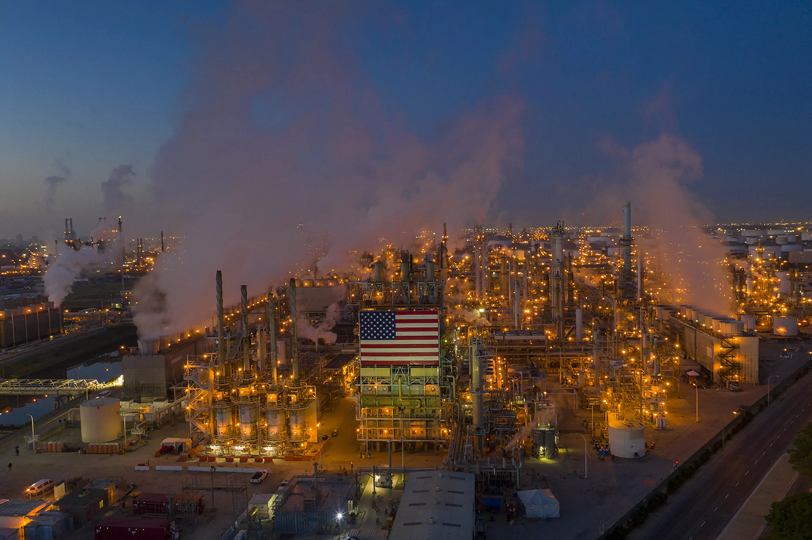
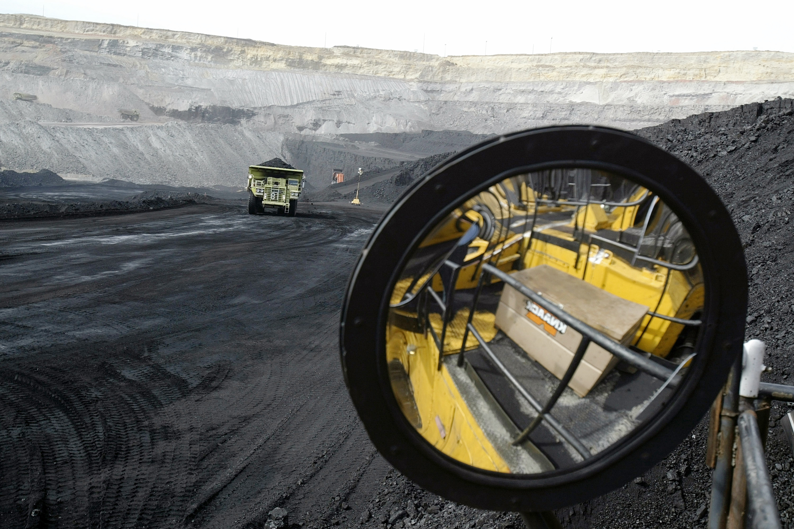

Introduction
Global Warming and Greenhouse Effects
Here is an article from National Geographic on greenhouse effect:
Human activities contribute to global warming by increasing the greenhouse effect. The greenhouse effect happens when certain gases—known as greenhouse gases—collect in Earth’s atmosphere. These gases, which occur naturally in the atmosphere, include carbon dioxide, methane, nitrogen oxide, and fluorinated gases sometimes known as chlorofluorocarbons (CFCs).
Greenhouse gases let the sun’s light shine onto Earth’s surface, but they trap the heat that reflects back up into the atmosphere. In this way, they act like the insulating glass walls of a greenhouse. The greenhouse effect keeps Earth’s climate comfortable. Without it, surface temperatures would be cooler by about 33 degrees Celsius (60 degrees Fahrenheit), and many life forms would freeze.
Since the Industrial Revolution in the late 1700s and early 1800s, people have been releasing large quantities of greenhouse gases into the atmosphere. That amount has skyrocketed in the past century. Greenhouse gas emissions increased 70 percent between 1970 and 2004. Emissions of carbon dioxide, the most important greenhouse gas, rose by about 80 percent during that time. The amount of carbon dioxide in the atmosphere today far exceeds the natural range seen over the last 650,000 years.
Carbon Dioxide
Most of the carbon dioxide that people put into the atmosphere comes from burning fossil fuels such as oil, coal, and natural gas. Cars, trucks, trains, and planes all burn fossil fuels. Many electric power plants also burn fossil fuels.
Another way people release carbon dioxide into the atmosphere is by cutting down forests. This happens for two reasons. Decaying plant material, including trees, releases tons of carbon dioxide into the atmosphere. Living trees absorb carbon dioxide. By diminishing the number of trees to absorb carbon dioxide, the gas remains in the atmosphere.
Methane and Nitrous Oxide
Most methane in the atmosphere comes from livestock farming, landfills, and fossil fuel production suchas coal mining and natural gas processing. Nitrous oxide comes from agricultural technology and fossil fuel burning.
Fluorinated Gases
Fluorinated gases include chlorofluorocarbons, hydrochlorofluorocarbons, and hydrofluorocarbons. These greenhouse gases are used in aerosol cans and refrigeration.
All of these human activities add greenhouse gases to the atmosphere, trapping more heat than usual and contributing to global warming.
Global Radiative Forcing
The climate portal at MIT explains that radiative forcing is what happens when the amount of energy that enters the Earth’s atmosphere is different from the amount of energy that leaves it. Energy travels in the form of radiation: solar radiation entering the atmosphere from the sun, and infrared radiation exiting as heat. If more radiation is entering Earth than leaving—as is happening today—then the atmosphere will warm up. This is called radiative forcing because the difference in energy can force changes in the Earth’s climate.


From the graph above, we know that carbon dioxide has the most contribution to global heating imbalance. Methane has the second most contribution to global heating imbalance. Then they are chlorofluorocarbons, nitrous oxide, hydrochlorofluorocarbons, and hydrofluorocarbons.
Greenhouse Gas Emissions by Sector
After knowing what is global radiative forcing, I wanted to know what industries are the top contributors to greenhouse gas emissions.
The graph below from Our World in Data organization shows the greenhouse gas emissions by sector, where we can see energy industry takes up to 73% of global greenhouse gas emissions in 2016. The high amount of percentage from energy industry makes me wonder if we are putting efforts in transitioning from traditional energy to clean energy and limiting our carbon footprint overtime.

Energy Industry
Clean Energy
Clean energy has been a hot topic recently as more and more people are concerned about global warming. WIth the emergence of electric vehicles and hybrid vehicles, the whole society has started to normalize EV as part of our lives. How ‘clean’ is the clean energy? Will the total carbon footprint of the supply chain of electric vehicles outweigh the traditional system? How much more electric consumption has been made as we normalize EVs?
The Big Picture
This time series project is going to focus on the US energy consumption over the years and I hope I would be able to get clearer ideas on energy industry and its greenhouse gasses emissions and carbon footprints overtime.

Business Questions
What is the trend of states’ petroleum consumption, price, and sales over the years?
What is the trend of states’ coal consumption, price, and sales over the years?
What is the trend of states’ electricity consumption, price, and sales over the years?
What is the trend of states’ natural gas consumption, price, and sales over the years?
What is the trend of states’ CO2 emissions over the years?
What is the energy import and export situation nationally and internationally over the years?
What is the trend of states’ cost and savings from energy efficiency programs?
How energy industry cause global warming?
What information about energy would exploratory data analysis reveal?
What information about energy would deep learning with time series reveal?
What information and prediction would be revealed from the different time series models?
What conclusion would be made based on the energy consumptions and model predictions?
